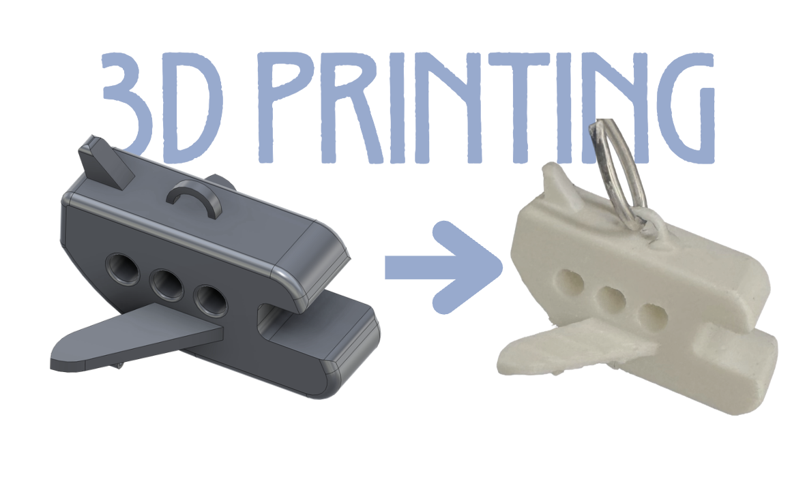
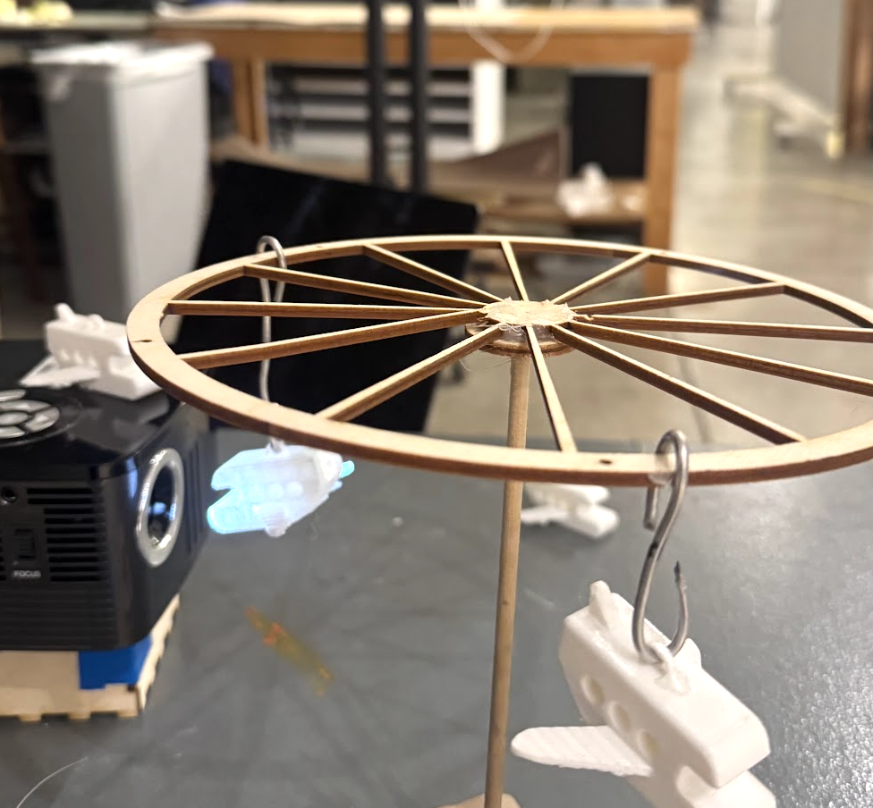

Week 5: 3D Design & Printing
Assignment 1: Model and 3D print something
For week 3, I decided to make the small toy planes that appear in my week 3 kinetic sculpture. As I explain in my week 3 documentation, the scultpure was used to block the projector in certain places for my animation installation. Using 3D printing, I got to experiment with different types of fillament and therefore also different shadows.

